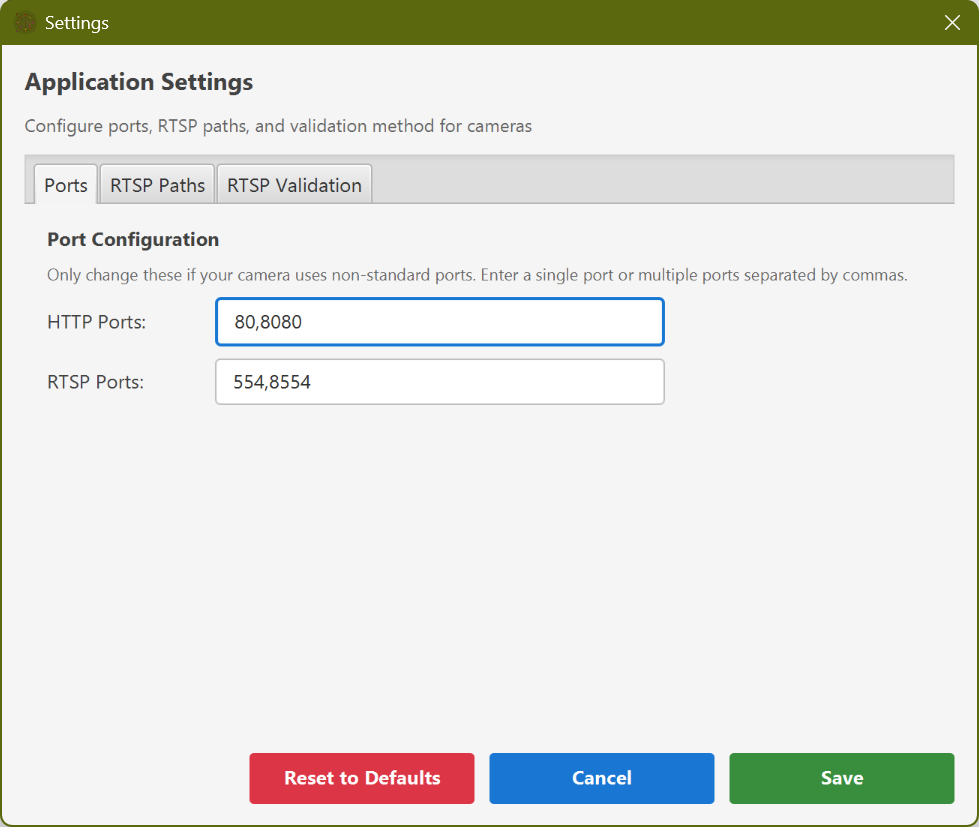
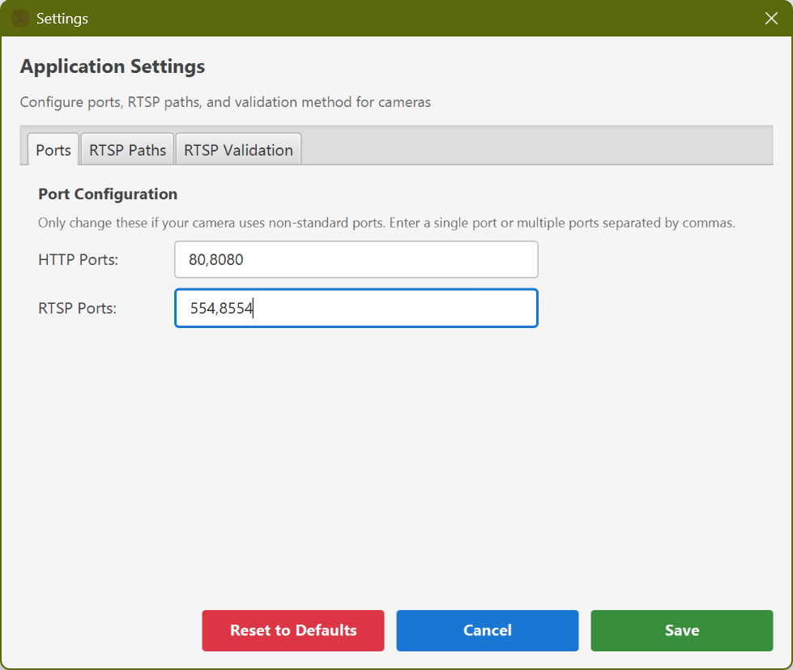
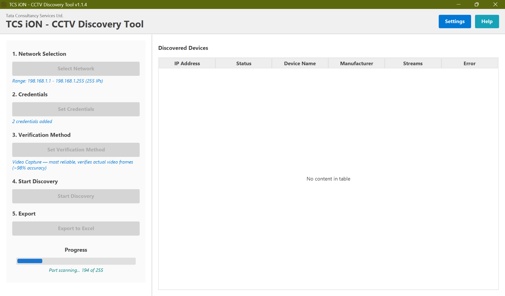

The CCTV Discovery & Audit Tool is an advanced network scanning application designed to automatically
discover,
authenticate, and audit IP cameras, NVRs (Network Video Recorders), and DVRs (Digital Video Recorders)
on your network.
It employs multiple industry-standard protocols and intelligent detection mechanisms to identify CCTV
devices and their configurations.
Key Features
Multi-Protocol Discovery
Utilizes ONVIF (WS-Discovery), RTSP stream analysis, and HTTP detection to identify devices
across various manufacturers
Advanced Network Selection
Simple and Advanced modes supporting single or multiple network interfaces, IP ranges, and CIDR
notations
Stream Analysis
Automatic RTSP stream detection with codec (H.264, H.265, MJPEG) and resolution analysis using
JavaCV
Multiple Credentials
Test up to 4 different credential sets with easy-to-use management and retry capabilities
Customizable Settings
Configure custom ONVIF/RTSP ports and manufacturer-specific RTSP paths for non-standard cameras
Intelligent Device Classification
Distinguishes between cameras, non-camera devices (routers, web servers), and authentication
failures
Color-Coded Results
Visual status indicators with color-coded table rows for instant recognition of device states
Host Audit Capability
Comprehensive system information gathering including OS details, CPU, memory, and NTP time drift
analysis
Excel Export
Dual-sheet Excel reports with CCTV Audit and Host Audit information for comprehensive
documentation
Note: This tool requires Java 8 or higher and is designed for authorized network
security
assessments, camera inventory management, and network auditing purposes only. Always obtain proper
authorization
before scanning any network.
2. Getting Started
System Requirements
Operating System: Windows 10 or Windows 11 (64-bit)
Memory: Minimum 8GB RAM recommended
Network: Active network connection with access to target camera network
Permissions: Standard User account (Administrator privileges NOT required)
Installation
The application is provided as a portable compressed archive. No installation is required.
Figure 1: Extracted Application Folder Structure
Download the CctvDiscovery-dist.zip file.
Right-click the ZIP file and select Extract All... to a folder of your choice
(e.g., Desktop or Documents).
Open the extracted folder.
Double-click CctvDiscovery.exe to launch.
First Launch
Launch the application by double-clicking the executable. The main window will appear, ready for use.
Figure 1: Main Application Window - Left panel for controls, right panel
for results
3. Main Window Layout
The main window features a clean, intuitive split-panel design optimized for efficient workflow:
Header Section
Located at the top of the window, the header contains the application title and two essential buttons:
Settings (Blue Button): Opens the configuration dialog for customizing ONVIF ports,
RTSP ports, and manufacturer-specific RTSP paths
Help (Teal Button): Displays a quick start guide dialog and provides access to this
comprehensive user manual
Figure 2: Header section with Settings and Help buttons
Left Panel - Control Section
The left panel is organized into five main sections for systematic workflow:
Network Selection: Configure target network ranges using Simple or Advanced mode
Credentials: Manage up to 4 authentication credential pairs with add/edit/delete
capabilities
Verification Method: Choose how to validate discovered cameras (Quick Check vs
Stream Test vs Video Capture)
Discovery: Start/stop the discovery process with the green "Start Discovery" button
Export: Enter site details and export results to Excel after discovery completes
Pro Tip: Summary information is displayed in blue text throughout the left panel,
providing
quick confirmation of your configuration choices.
Right Panel - Results Section
Displays discovered devices in a color-coded, sortable table with the following columns:
Status: Current device state (COMPLETED, AUTHENTICATING, AUTH_FAILED, etc.)
IP Address: Device IP address on the network
MAC Address: Hardware MAC address (used for manufacturer identification via OUI
lookup)
Manufacturer: Camera manufacturer (e.g., Hikvision, Dahua, Axis)
Model: Specific device model (if available via ONVIF GetDeviceInformation)
HTTP Port(s): Open HTTP ports (comma-separated if multiple)
RTSP Stream(s): Number of discovered RTSP streams
Credential Used: Username:password that successfully authenticated
Error Message: Description of any errors encountered
Note: Right-click on any device row to access context menu options, including "Retry
with Different Credentials"
for failed authentication attempts.
4. Network Selection
The Network Selection section offers flexible options for defining which IP addresses to scan. It
operates in
two distinct modes: Simple Mode and Advanced Mode.
Simple Mode (Default)
In Simple Mode, you select one network source from three available options:
Figure 3: Network Selection in Simple Mode - Choose one option
Option 1: Network Interface
Select a network interface from the dropdown menu. The application will automatically scan the entire
subnet
associated with the selected interface's IP address.
Use Case: Scanning your directly connected local network
Use Case: Quick specification of standard subnet sizes
Helpful Feature: The application displays "Possible IPs: X" in centered, italic text
below
your selection, helping you estimate scan time. Larger ranges will take proportionally longer.
Advanced Mode
Enable Advanced Mode by checking the "Advanced Mode" checkbox. This powerful feature allows you to
select
multiple network sources simultaneously, combining interfaces, ranges, and CIDRs in a
single scan.
Mixed Sources: Combine interfaces + ranges + CIDRs in any combination
Deduplication: Application automatically removes duplicate IPs across all sources
Advanced Use Case: Scan three office networks (10.0.1.0/24, 10.0.2.0/24), one warehouse
network
(192.168.100.0/24), and a specific DMZ range (172.16.5.10 - 172.16.5.20) all in one discovery operation.
Summary Display
Below your selections, a blue text summary displays your current configuration:
Simple Mode: "Network: [interface name]" or "Range: [start] - [end]" or "CIDR:
[notation]"
Performance Warning: Scanning very large networks (>/16 or 65,000+ IPs) can take
significant time
(30-60+ minutes) and may trigger network security monitoring systems. Always ensure you have proper
authorization
before initiating large scans.
5. Credential Management
The Credentials section allows you to manage up to 4 different username/password combinations. During
discovery,
all credentials will be tested against each discovered device until one succeeds or all fail.
Enter the Username in the left text field (default: "admin")
Enter the Password in the right text field
Click the green "Add Credential" button
The credential pair appears in the list view below
Repeat to add up to 4 credential pairs
Note: The default username "admin" is pre-filled as it's the most common default for IP
cameras
across all manufacturers. You must add at least one credential before starting
discovery.
Credential Display Format
Added credentials appear in the format: username:password
Example: admin:12345
Editing Credentials
To modify an existing credential:
Right-click on the credential in the list view
Select "Edit" from the context menu
The username and password fields are populated with the selected credential's values
Modify the username and/or password as needed
Click "Add Credential" to save the changes (the original is automatically removed)
Figure 6: Right-click context menu for Edit and Delete options
Deleting Credentials
Right-click on the credential in the list view
Select "Delete" from the context menu
The credential is immediately removed from the list
Credential Testing Order
During authentication, credentials are tested in the order they appear in the list (top to bottom). If
the first
credential succeeds, remaining credentials are not tested for that device. This optimizes performance
when you
have a primary credential that works for most cameras.
Best Practice: Place the most commonly used credential first in the list for optimal
performance.
The summary displays "Credentials: X added" in blue text to confirm your configuration.
Common Default Credentials
Here are common default credentials for popular camera manufacturers:
Manufacturer
Default Username
Default Password
Notes
Hikvision
admin
12345
Newer models require password setup on first use
Dahua
admin
admin
Some models use blank password
Axis
root
pass
Newer models require password setup
Foscam
admin
(blank)
Leave password field empty
Ubiquiti
ubnt
ubnt
UniFi Protect uses different credentials
Amcrest
admin
admin
Rebranded Dahua cameras
Security Warning: Default credentials are a major security risk. Always change default
passwords
on production camera systems. This tool is designed to help identify cameras still using default
credentials
so they can be secured.
6. Verification Method
The Verification Method section allows you to choose how the tool confirms that a
discovered camera is working.
This setting balances scan speed against verification accuracy.
Figure 7: Verification Method selection dialog
Available Methods
Click the Set Verification Method button to choose one of the following options:
1. Quick Check (SDP_ONLY)
Fastest option. The tool checks if the camera responds to RTSP connection requests
(DESCRIBE command) and returns a valid Session Description Protocol (SDP).
Speed: ~3 seconds per camera
Accuracy: ~60%
Pros: Very fast scanning of large networks
Cons: Some cameras may appear "working" even if the video feed is black or broken
2. Stream Test (RTP_PACKET)
Balanced option. The tool establishes a connection and waits to receive actual video
data packets (RTP) from the camera.
Speed: ~5 seconds per camera
Accuracy: ~90%
Pros: Verifies the camera is actively sending data
Cons: Slower than Quick Check
3. Video Capture (FRAME_CAPTURE) - Recommended
Most reliable option. The tool actually captures and decodes a video frame from the
stream. This is the default setting.
Speed: ~10 seconds per camera
Accuracy: ~98%
Pros: Confirms the stream is viewable and not just connected; Best for official
audits
Cons: Slowest method; requires more CPU/network resources
Recommendation: Use Quick Check for initial large-scale discovery,
then switch to
Video Capture for a final compliance audit of identified devices.
7. Settings Configuration
The Settings dialog provides advanced configuration options for customizing port scanning and RTSP path
discovery.
Access it by clicking the blue Settings button in the header.
Figure 8: Settings Dialog with three configuration sections
When to Use Custom Settings
Custom settings are necessary when:
Cameras use non-standard HTTP or RTSP ports
Network security policies block standard ports
Manufacturer uses proprietary RTSP path formats not in default list
NVR/DVR systems use custom port configurations
Section 1: ONVIF Ports Configuration
ONVIF (Open Network Video Interface Forum) is the standard protocol for camera discovery and management.
Default ports are: 80, 8080, 8000

Figure 9: ONVIF Ports configuration field
Configuring ONVIF Ports
Format: Comma-separated list of port numbers
Example:80,8080,8000,8081,9000
Usage: These ports are scanned for ONVIF device services after WS-Discovery
Technical Note: ONVIF discovery occurs in two phases: (1) WS-Discovery multicast probe
on
239.255.255.250:3702, (2) HTTP requests to ONVIF service URLs on these ports.
Section 2: RTSP Ports Configuration
RTSP (Real-Time Streaming Protocol) is used for video stream access. Default ports are: 554,
8554

Figure 10: RTSP Ports configuration field
Configuring RTSP Ports
Format: Comma-separated list of port numbers
Example:554,8554,8000,10554
Usage: These ports are scanned and tested for RTSP stream availability
Performance Tip: Adding many custom ports increases scan time proportionally. Only add
ports
you know are in use on your network.
Section 3: Custom RTSP Path Pairs
Camera manufacturers use different URL path formats for accessing RTSP streams. While the application
includes
extensive defaults for major manufacturers, you can add custom paths for uncommon or proprietary
systems.
Main Stream (Primary): High-quality stream, typically 1080p or 4K resolution,
higher bitrate, used for recording
Sub Stream (Secondary): Lower-quality stream, typically 480p or 720p, lower
bitrate, used for live monitoring to save bandwidth
Adding Custom Path Pairs
Enter the Main Stream Path in the left field (e.g.,
/h264/ch1/main/av_stream)
Enter the Sub Stream Path in the right field (e.g.,
/h264/ch1/sub/av_stream)
Click the blue "Add Path Pair" button
The path pair appears in the list view below
Repeat to add multiple custom path pairs
Path Format Rules
Always start paths with forward slash /
Do not include protocol, IP, port, or credentials (added automatically)
Use exact path as required by the camera manufacturer
Paths are case-sensitive
Common RTSP Path Formats
Manufacturer
Main Stream Path
Sub Stream Path
Hikvision
/Streaming/Channels/101
/Streaming/Channels/102
Dahua
/cam/realmonitor?channel=1&subtype=0
/cam/realmonitor?channel=1&subtype=1
Axis
/axis-media/media.amp
/axis-media/media.amp?resolution=640x480
Uniview
/media/video1
/media/video2
Hanwha (Samsung)
/profile1/media.smp
/profile2/media.smp
Multi-Channel NVR/DVR Paths
For NVR/DVR systems with multiple channels, paths typically include channel numbers. The application
automatically
iterates through common channel ranges when a manufacturer is identified.
Hikvision NVR:/Streaming/Channels/[101-132] for 16 channels
After making all desired changes, click the green "Save" button at the bottom
Settings are immediately written to user-settings.properties
A confirmation dialog appears with recommendation to restart for changes to take full effect
Click "Close" to exit the Settings dialog
Persistence: All settings are saved to user-settings.properties in the
application
directory and automatically loaded on next startup. Settings persist across application restarts.
Resetting to Defaults
To remove all custom settings and restore factory defaults:
Click the red "Reset to Defaults" button at the bottom of the Settings dialog
Confirm the action in the dialog that appears
All custom ports and RTSP paths are cleared
Default ports are restored (ONVIF: 80,8080,8000 | RTSP: 554,8554)
Warning: Reset to Defaults is immediate and cannot be undone. Any custom RTSP path
pairs you
added will be permanently deleted.
8. Running Discovery
Once you've configured the network selection and added at least one credential, you're ready to initiate
the
discovery process. This section explains the complete workflow and what happens behind the scenes.
RTSP Validation Method Selection
Before starting discovery, you can choose how RTSP stream URLs are validated. This setting is located in
the
Discovery section above the "Start Discovery" button. Three validation methods are
available:
Cons: Many cameras return valid SDP for ANY path, including invalid ones. Query
parameters and URL fragments may be ignored, resulting in false positives
Use When: Speed is critical and you can tolerate false positives
2. RTP Packet (Medium, ~90% accurate)
Speed: 5 seconds per URL
Accuracy: ~90%
Method: Full RTSP session (DESCRIBE → SETUP → PLAY), then listens for actual RTP
packets over UDP
Pros: Verifies that the stream actually works and delivers video data. Confirms
query parameters are honored
Cons: Slower than SDP. May miss some edge cases where RTP packets are delayed or
corrupt
Use When: You need a balance between speed and accuracy
3. Frame Capture (Slow, ~98% accurate) - DEFAULT
Speed: 10 seconds per URL
Accuracy: ~98%
Method: Uses FFmpeg to actually decode and capture a video frame from the stream
Pros: Highest accuracy. Verifies the video stream is fully decodable and playable.
Near-perfect confirmation
Cons: Slowest method. Discovery takes longer with large networks
Use When: Accuracy is critical and you can afford the extra time (recommended for
production audits)
Performance Comparison: For a network with 20 cameras and 5 RTSP paths per camera (100
URLs total):
• SDP Only: ~5 minutes
• RTP Packet: ~8 minutes
• Frame Capture: ~17 minutes
Recommendation: Frame Capture (Default) is recommended for most use cases as it
provides the most
reliable results. Use SDP Only for quick preliminary scans or when time is extremely limited.
Pre-Discovery Checklist
Before starting, verify:
✓ Network selection is configured (interface, range, or CIDR)
✓ At least one credential has been added
✓ Network connectivity is stable
✓ You have authorization to scan the target network
✓ Sufficient time is available (estimate based on "Possible IPs" count)
Starting Discovery
Review your configuration summary (displayed in blue text)
Click the green "Start Discovery" button
Button changes to red "Stop Discovery" (can cancel anytime)
Progress section activates with real-time updates
Results begin appearing in the right panel as devices are processed

Figure 11: Discovery in progress with teal progress bar and status updates
Discovery Process Phases
The application performs discovery in five intelligent phases:
Phase 1: Initial Network Scan
Purpose: Identify live hosts on the network
Method: ICMP echo requests (ping) to all IPs in configured range(s)
Concurrency: Multiple IPs scanned simultaneously for speed
Timeout: 1 second per IP (configurable in code)
Progress: "Scanning network... X/Y IPs checked"
Result: List of responsive IP addresses
Phase 2: Port Detection
Purpose: Identify open HTTP and RTSP ports on live hosts
RTSP Ports Scanned: 554, 8554 (default) + any custom ports
Method: TCP connection attempts with short timeout
Progress: "Scanning ports... X/Y devices"
Optimization: Parallel scanning with thread pool
Phase 3: ONVIF Discovery (WS-Discovery)
Purpose: Identify ONVIF-compliant devices and extract metadata
Multicast Probe: Sent to 239.255.255.250:3702
Wait Period: 3 seconds for devices to respond
Response Parsing: Extracts ONVIF service URLs, manufacturer, model
Device Services: Attempts to contact ONVIF device service on detected HTTP ports
Progress: "Discovering ONVIF devices..."
Technical Detail: ONVIF WS-Discovery uses SOAP over UDP multicast. Not all cameras
respond
to WS-Discovery (some require direct ONVIF service URL access), so the application tries both methods.
Phase 4: Authentication and RTSP Stream Discovery
Purpose: Authenticate with discovered devices and locate RTSP streams
Credential Testing: Each credential tested in order until success or all fail
Authentication Methods: ONVIF authentication (HTTP Digest) and RTSP authentication
Path Testing Strategy:
If manufacturer identified → Test manufacturer-specific paths first
Test custom paths from Settings
Fall back to generic common paths
For NVRs → Iterate through channel numbers (1-16 or 101-132)
Smart Caching: Successful paths cached per manufacturer for faster subsequent
discoveries
Purpose: Extract codec, resolution, and framerate information from discovered streams
Method: JavaCV (FFmpeg) opens RTSP stream and analyzes video packets
Extracted Information:
Codec: H.264 (AVC), H.265 (HEVC), MJPEG, MPEG4
Resolution: 1920x1080, 2592x1944, 3840x2160, etc.
Framerate: 15fps, 20fps, 25fps, 30fps, etc.
Timeout: 10 seconds per stream to prevent hanging on slow cameras
Progress: "Analyzing streams... X/Y"
Real-Time Progress Monitoring
The Progress section displays:
Progress Bar (Teal): Visual indicator from 0% to 100%
Status Label (Teal Italic): Current operation description
Percentage: Numerical completion percentage
Real-Time Results Updates
As discovery progresses, devices appear in the results table with color-coded status:
PENDING Initial state when IP is added
SCANNING Port scanning in progress
AUTHENTICATING Testing credentials
ANALYZING Stream analysis in progress
COMPLETED Successfully discovered with
streams
AUTH_FAILED Authentication failed or
unknown device
Discovery Completion
When discovery finishes:
Progress bar reaches 100%
Status label displays "Discovery complete - X devices found"
Start Discovery button re-enables (can run another scan)
Export section enables for Excel export
All discovered devices are displayed with final status
Time Estimates:
Small network (/27, ~30 IPs): 30-60 seconds
Medium network (/24, ~254 IPs): 2-5 minutes
Large network (/16, ~65,000 IPs): 30-60 minutes
Times vary based on network speed, number of cameras, and credential count.
Stopping Discovery Mid-Process
You can cancel discovery at any time:
Click the red "Stop Discovery" button
Application gracefully terminates all scanning threads
Partial results are discarded (not saved or exportable)
UI returns to ready state
Important: Stopping discovery mid-process does not save partial results. You must
complete
a full discovery to export results.
9. Viewing and Understanding Results
After discovery completes, all discovered devices are displayed in a color-coded, sortable table in the
right panel.
Understanding the color coding and status indicators is key to quickly assessing your camera network.
Figure 12: Discovery results with color-coded rows indicating device
status
Color-Coded Row System
Each row is color-coded based on the device's final status for instant visual recognition:
Row Color
Text Color
Status
Meaning
Light Green
Dark Green
COMPLETED
Successfully discovered camera with at least one working RTSP stream
Light Yellow
Dark Amber
AUTHENTICATING
Currently testing credentials (visible during active discovery)
Light Red
Dark Red
AUTH_FAILED (Credentials)
Device detected and confirmed as camera, but all credentials failed
Light Gray
Dark Gray
AUTH_FAILED (Unknown Device)
Device is likely NOT a camera (router, web server, etc.)
Light Blue
Dark Blue
PENDING/SCANNING/ANALYZING
Device discovered but not yet fully processed
Quick Interpretation: Green = Good (camera working), Red = Credentials failed, Gray =
Not a camera, Blue = In progress
Understanding Device Status
COMPLETED (Green Rows)
Indicates a fully functional camera with authenticated access:
At least one credential successfully authenticated
One or more RTSP streams discovered and verified
Stream information extracted (codec, resolution, framerate)
Device ready for production use or documentation
AUTH_FAILED - Credential Failure (Red Rows)
Indicates a confirmed camera with authentication problems:
Device identified as camera via ONVIF or RTSP port detection
All provided credentials failed to authenticate
Error Message column shows "Authentication failed with all credentials"
Action Required: Add correct credentials and use "Retry Authentication" feature
AUTH_FAILED - Unknown Device Type (Gray Rows)
Indicates a non-camera device that responded on scanned ports:
Device has open HTTP/RTSP ports but is NOT a camera
No ONVIF WS-Discovery response received
No RTSP ports detected
ONVIF device service requests failed (404, SSL errors)
Error Message column shows "Unknown device type"
Examples: Routers, switches, web servers, NAS devices
Intelligence Feature: The application intelligently distinguishes between cameras with
wrong
credentials (red) and non-camera devices (gray), preventing false positives and focusing your attention
on
actual camera authentication issues.
Table Columns Explained
Status Column
Displays the current processing state of the device (see color-coded table above).
IP Address Column
The IPv4 address of the discovered device. Click the column header to sort by IP address.
MAC Address Column
The hardware MAC address of the device, resolved via ARP. Used for manufacturer identification via OUI
(Organizationally Unique Identifier) lookup. May be blank for devices on different subnets.
Manufacturer Column
Camera manufacturer identified through:
ONVIF Response: Manufacturer field from GetDeviceInformation
MAC OUI Lookup: First 3 bytes of MAC address matched to vendor database
RTSP Server Header: Server identification string parsing
Model Column
Specific camera model extracted from ONVIF GetDeviceInformation response. May be blank if device doesn't
support ONVIF or doesn't provide model information.
HTTP Port(s) Column
Comma-separated list of open HTTP ports detected on the device. These ports typically host the camera's
web interface for configuration.
Example:80, 8080
RTSP Stream(s) Column
Displays the count of discovered RTSP streams. The actual stream URLs are included in
the
Excel export for security reasons (not displayed in UI).
Green text: Number > 0 (streams found)
Red text: 0 (no streams found)
Example:2 indicates 2 streams (typically main +
sub)
Credential Used Column
Shows which username:password combination successfully authenticated with the device. Helps you track
which
credentials are in use across your camera infrastructure.
Example:admin:12345
Error Message Column
Provides detailed information about failures:
"Authentication failed with all credentials" - Wrong username/password
"Unknown device type" - Not a camera
"No RTSP streams found" - Authentication succeeded but streams not discovered
"Connection timeout" - Device not responding
"SSL/TLS error" - Certificate validation issues
Sorting and Filtering
Sorting
Click any column header to sort the table by that column:
First click: Ascending order
Second click: Descending order
Common Use Cases:
Sort by Status to group all failures together
Sort by Manufacturer to see all cameras from one vendor
Sort by IP Address to identify cameras on specific subnets
Visual Filtering by Color
The color-coded rows allow instant visual filtering:
Scroll through table looking for red rows (credential failures needing attention)
Verify all green rows represent expected cameras
Ignore gray rows (non-camera devices)
Context Menu Actions
Right-click on any row to access additional actions (see next section on Retry Authentication for
details).
10. Retry Authentication
The Retry Authentication feature allows you to re-attempt authentication on devices that failed
initially,
without re-running the entire discovery process. This is particularly useful when you obtain correct
credentials
after the initial scan.
Figure 13: Right-click context menu with "Retry with Different
Credentials" option
When to Use Retry Authentication
Use this feature when:
Device shows AUTH_FAILED with red
background (credential failure)
You've obtained the correct credentials after the initial scan
You want to test a different credential without re-scanning the entire network
A camera's password was recently changed and you need to update it
Important: Retry Authentication is NOT available for devices marked as "Unknown device
type"
(gray rows), as these are confirmed non-camera devices.
Retry Authentication Process
Step 1: Add New Credentials
In the Credentials section (left panel), add the correct username:password
Click "Add Credential" to add it to your credential list
The new credential is now available for retry attempts
Step 2: Initiate Retry
Locate the failed device in the results table (red row)
Right-click on the device row
Select "Retry with Different Credentials" from the context menu
Step 3: Automatic Re-Authentication
The application automatically performs:
Resets device status to AUTHENTICATING (yellow row)
Tests all credentials in your current credential list (including newly added ones)
Attempts ONVIF authentication on detected HTTP ports
Attempts RTSP authentication on detected RTSP ports
If successful → Discovers and analyzes streams
Updates row color and status based on result
Step 4: Review Results
After retry completes:
Success (Green Row):
Status changes to COMPLETED
Credential Used column updates with successful credential
Error Message shows "Authentication failed with all credentials"
Can retry again with different credentials
Retry Multiple Devices
To retry multiple failed devices efficiently:
Add all necessary credentials to the Credentials section first
Right-click and retry each failed device individually
All devices will test against all credentials in the list
Batch Workflow: After obtaining multiple passwords, add them all to the credential
list,
then retry each failed device. This is much faster than re-running full discovery.
Retry vs. Full Rediscovery
Feature
Retry Authentication
Full Rediscovery
Time Required
5-10 seconds per device
2-60 minutes (full network scan)
Network Impact
Minimal (single device)
High (entire network)
Use Case
Fix specific credential failures
Discover new devices or changed network
Existing Results
Preserved
Cleared and rebuilt
Limitations
Cannot retry devices marked as "Unknown device type" (gray rows) - these are confirmed non-cameras
Retry only tests authentication; does not re-scan ports or re-detect manufacturer
Original port and manufacturer detection is reused
Must have at least one credential in the credential list to retry
Security Note: Multiple failed authentication attempts may trigger account lockouts or
security
alerts on some camera systems. Exercise caution when retrying multiple times with different credentials.
11. Exporting to Excel
After discovery completes, you can export the results to a comprehensive Excel file containing two
sheets:
CCTV Audit (camera details) and Host Audit (system information). This provides complete documentation
for
network auditing and camera inventory management.
Export Prerequisites
Before exporting, ensure:
✓ Discovery has completed successfully
✓ At least one device appears in the results table
✓ You have write permissions to the target save location
Export Process
Step 1: Enter Site Information
In the Export section (bottom of left panel), provide:
Site ID: Identifier for the location (e.g., "Building A", "Main Office", "NYC-DC1")
Premise Name: Full name of the premises (e.g., "Acme Corporation Headquarters")
Operator Name: Name of person conducting the audit (e.g., "John Smith")
Note: All three fields are required and will be included in the Excel export header for
documentation purposes.
Figure 14: Export section with site information fields
Step 2: Initiate Export
Click the blue "Export to Excel" button
File chooser dialog appears
Navigate to desired save location
Default filename: CCTV_Audit_{SiteID}.xlsx (can be changed)
Click "Save"
Step 3: Export Generation
The application generates the Excel file with:
Professional formatting and styling
Two sheets: CCTV Audit and Host Audit
Auto-sized columns for readability
Frozen header rows for easy scrolling
Progress indicator during generation (for large datasets)
Step 4: Completion
Success dialog appears with file location
Excel file is ready to open in Microsoft Excel, LibreOffice, or Google Sheets
You can export multiple times with different filenames
Excel File Structure
Sheet 1: CCTV Audit
Contains comprehensive camera discovery results with the following sections:
Header Information Block
Site ID: Your specified site identifier
Premise Name: Your specified premise name
Operator Name: Your specified operator name
Scan Date/Time: Timestamp when discovery was performed
Total Devices: Count of discovered devices
Network Range: Summary of scanned networks
Application Version: Tool version for traceability
Device Table Columns
Column
Description
No.
Sequential device number
Status
Final device status (COMPLETED, AUTH_FAILED, etc.)
IP Address
Device IP address
MAC Address
Hardware MAC address
Manufacturer
Camera manufacturer
Model
Camera model
Firmware Version
Firmware version (if available via ONVIF)
HTTP Ports
Open HTTP ports (comma-separated)
RTSP Ports
Open RTSP ports (comma-separated)
RTSP Stream URLs
Complete RTSP URLs with credentials (multiple rows if multiple streams)
Stream Codec
Video codec (H.264, H.265, MJPEG)
Stream Resolution
Video resolution (e.g., 1920x1080)
Stream FPS
Frames per second
Credential Used
Successful authentication credential
ONVIF Service URL
ONVIF device service endpoint
Error Message
Failure description (if applicable)
Notes
Blank column for manual annotations
Formatting
Header row: Bold white text on blue background
Alternating row colors: White and light gray for readability
Frozen panes: Header row remains visible while scrolling
Auto-filter: Enabled on all columns for easy filtering
Column widths: Automatically sized to content
Sheet 2: Host Audit
Contains comprehensive system information about the computer running the audit tool:
Figure 15: Host Audit sheet in Excel export
System Information Sections
Section
Information Captured
Basic Info
Hostname, Operating System, OS Version, OS Architecture
Hardware
• CPU: Manufacturer, model, cores, logical processors, current speed
• Memory: Total RAM, available RAM, usage percentage
• Storage: All drives with total/free space
Network
• All network interfaces with IP addresses, MAC addresses, MTU
• Default gateway
• DNS servers
Time Sync
• Local system time
• NTP server time (from pool.ntp.org)
• Time drift calculation (milliseconds)
• Drift assessment (Acceptable/Warning/Critical)
Audit Metadata
• Audit performed by (Operator Name)
• Audit date and time
• Application version
Purpose of Host Audit
The Host Audit sheet provides:
Documentation: Complete record of the system used for the audit
Troubleshooting: System specifications if issues arise
Compliance: Audit trail showing who performed the scan and when
Time Validation: NTP drift detection helps identify system clock issues that could
affect logs
NTP Time Drift: Significant time drift (>5 seconds) can cause issues with SSL
certificate
validation and log correlation. The Host Audit sheet flags this automatically.
Working with Exported Excel Files
Opening the File
Microsoft Excel: Double-click the .xlsx file
LibreOffice Calc: File → Open → Select .xlsx file
Google Sheets: File → Import → Upload .xlsx file
Common Operations
Filtering: Use auto-filter dropdowns to show only specific manufacturers, statuses,
or subnets
Sorting: Click column headers to sort by any field
Conditional Formatting: Add custom formatting rules to highlight specific
conditions
Pivot Tables: Create pivot tables for statistical analysis (e.g., cameras by
manufacturer)
Annotations: Use the Notes column to add manual observations
Sharing and Distribution
Excel files can be freely shared via email, network drives, or cloud storage
No password protection is applied by default
Consider adding password protection if files contain sensitive credential information
Security Warning: Excel files contain sensitive information including IP addresses,
credentials,
and RTSP URLs with embedded passwords. Protect these files appropriately:
Store in secure locations with access controls
Encrypt when transmitting over untrusted networks
Remove credential information before sharing externally
Follow your organization's data classification policies
Re-exporting
You can export multiple times from the same discovery session:
Change Site ID to create separate reports for different documentation purposes
Export before and after retrying authentication to compare results
Create dated exports for historical tracking
File Naming Best Practices
Consider these naming conventions for organization:
Verify installation: Open terminal/cmd and run java -version
Java Version Too Old:
Application requires Java 8 (1.8) minimum
Update Java to latest version
Missing Dependencies:
Ensure all JAR files are in the same directory
Re-extract from original ZIP if files are missing
Issue: Application Crashes or Freezes During Discovery
Solutions:
Insufficient Memory:
Close other applications to free RAM
Reduce network range size (scan smaller subnets)
For very large networks, increase Java heap:
java -Xmx4G -jar cctv-discovery.jar
Network Timeout Issues:
Slow or unstable network can cause hangs
Check network connectivity stability
Restart discovery if network was temporarily unavailable
Check Logs:
Open cctv-discovery.log in application directory
Look for ERROR or EXCEPTION messages
Include log excerpts when reporting issues
Issue: Settings Not Persisting
Symptoms: Custom ports and paths reset after application restart
Solutions:
File Permissions:
Ensure application directory has write permissions
On Linux/Mac: Check file permissions with ls -la user-settings.properties
On Windows: Right-click folder → Properties → Security tab
Running from Read-Only Location:
Don't run from CD-ROM or read-only network share
Copy application to local hard drive
Windows UAC:
Run as Administrator if installed in Program Files
Or install in user directory (Documents, Desktop)
Export Issues
Issue: Excel Export Fails
Symptoms: Error dialog when clicking "Export to Excel"
Solutions:
File Already Open:
Close any existing Excel file with the same name
Excel locks files when open, preventing overwrites
Insufficient Disk Space:
Check available disk space on target drive
Excel files are typically 50KB - 5MB depending on device count
Write Permissions:
Ensure you have write access to the target directory
Try exporting to Documents or Desktop folder
Invalid Site ID Characters:
Avoid special characters in Site ID: / \ : * ? " < > |
These are invalid in Windows filenames
Issue: Excel File Won't Open
Solutions:
Ensure Microsoft Excel, LibreOffice, or compatible spreadsheet software is installed
File may be corrupted if export was interrupted - export again
Try opening with different spreadsheet software
Performance Issues
Issue: Discovery is Very Slow
Solutions:
Large Network Range:
Reduce range or use Advanced Mode to target specific subnets
/16 networks (65K IPs) can take 30-60 minutes
Network Latency:
High latency networks (wireless, VPN) slow scanning
Use wired connection when possible
Many Unresponsive IPs:
Each unresponsive IP waits for timeout (1 second)
Sparse networks (few devices, many empty IPs) take longer
Many Credentials:
Each device tests all credentials sequentially
Remove unnecessary credentials from list
Log Files
The application maintains detailed log files in the application directory:
cctv-discovery.log - Current session log
cctv-discovery.YYYY-MM-DD.log - Daily rolled logs (retained for 30 days)
Log Levels
ERROR: Critical failures requiring attention
WARN: Non-critical issues (e.g., device timeouts)
INFO: Normal operation events (e.g., device discovered)
DEBUG: Detailed technical information (e.g., ONVIF SOAP messages)
Interpreting Logs
Common log patterns:
Discovered device via WS-Discovery: 192.168.1.100 - ONVIF device found
Authentication successful for 192.168.1.100 with credentials admin:***** - Login
succeeded
SSL error for http://192.168.1.1:80/onvif/device_service - Non-camera device
All RTSP credential combinations failed for 192.168.1.100 - Wrong password
Reporting Issues: When contacting support, include:
Application version (from Help → About)
Operating system and version
Relevant log excerpts from cctv-discovery.log
Steps to reproduce the problem
Network size and device count
13. Frequently Asked Questions
Q: Is this tool legal to use?
A: Yes, ONLY on networks you own or have explicit written
authorization to scan.
Unauthorized network scanning may violate laws such as the Computer Fraud and Abuse Act (CFAA) in the
United States,
Computer Misuse Act in the UK, or similar legislation in other jurisdictions. This tool is designed for
legitimate
network administration, security auditing, and camera inventory management by authorized personnel.
RTSP: All versions, supports H.264, H.265 (HEVC), MJPEG, MPEG4 codecs
HTTP/HTTPS: For ONVIF device services and web interface detection
Authentication: HTTP Basic and Digest authentication
Q: How long does a typical scan take?
A: Scan time depends primarily on network size:
Small network (/27, 30 IPs): 30-60 seconds
Medium network (/24, 254 IPs): 2-5 minutes
Large network (/16, 65,534 IPs): 30-60 minutes
Factors affecting speed: network latency, number of live devices, number of credentials, RTSP stream
analysis time.
Q: Can I scan multiple networks simultaneously?
A: Yes, using Advanced Mode! Enable the "Advanced Mode" checkbox in the Network
Selection section,
then select multiple interfaces, add multiple IP ranges, and/or add multiple CIDR blocks. The tool will
scan all
specified networks in a single discovery operation, automatically deduplicating any overlapping IP
addresses.
Q: Does the tool work with all camera brands?
A: The tool works with most IP cameras that support standard protocols:
Partial Support: Brands using ONVIF or RTSP (may require custom paths in Settings)
No Support: Cameras using proprietary protocols only (rare in modern cameras)
For cameras with non-standard RTSP paths, consult manufacturer documentation and add custom paths in
Settings.
Q: How are MAC addresses resolved?
A: MAC addresses are resolved using ARP (Address Resolution Protocol) for devices on
the same
subnet. The operating system's ARP cache is queried for each discovered IP. For devices on different
subnets
(routed networks), MAC address may not be available and will appear blank in results.
Q: Can I save discovered device lists for later use?
A: Yes, export to Excel after each scan. The Excel file serves as a permanent record
with full
device details including credentials and RTSP URLs. The application does not maintain an internal
database of
previous scans - each discovery is independent.
Q: What network permissions does the tool require?
A: The tool requires the following network access:
ICMP Echo Request (Ping): For host discovery (may require admin/root on Linux/Mac)
TCP Connections: To HTTP ports (80, 8080, 8000, custom) and RTSP ports (554, 8554,
custom)
UDP Multicast: To 239.255.255.250:3702 for ONVIF WS-Discovery
UDP Unicast: To NTP servers (pool.ntp.org:123) for time drift calculation
Firewall rules must allow these protocols for the application to function properly.
Q: Is my data sent anywhere or stored remotely?
A:NO. The tool operates entirely offline and locally. All data
remains on your
local machine. No information is transmitted to external servers, cloud services, or third parties. The
only
outbound connections are:
To cameras on your local network (scan targets)
To NTP servers for time drift calculation (can be disabled by firewall)
Q: Why do some cameras show "Unknown device type" instead of "AUTH_FAILED"?
A: The tool intelligently distinguishes between cameras and non-camera devices. A
device is marked
"Unknown device type" (gray row) when:
No ONVIF WS-Discovery response received
No RTSP ports detected (554, 8554, custom)
ONVIF device service requests fail (404, SSL errors, no response)
These devices are typically routers, switches, web servers, or other non-camera equipment. Actual
cameras with
wrong credentials show "AUTH_FAILED" (red row) with error message "Authentication failed with all
credentials".
Q: Can I customize the Excel export format?
A: The export format is fixed to ensure consistency and include all necessary fields.
However,
after export you can freely modify the Excel file to add custom columns, formatting, or data. The file
is a
standard .xlsx format compatible with all spreadsheet software.
Q: What happens if discovery is interrupted (power loss, network failure)?
A: Partial results are not saved. If discovery is stopped (manually or due to
crash/shutdown),
you will need to restart the discovery process from the beginning. To minimize risk:
Ensure stable power and network connectivity before starting large scans
Use UPS for critical scans
For very large networks, consider scanning in smaller subnets and combining Excel exports manually
Q: Does the tool support IPv6?
A: Currently, the tool supports IPv4 only. Most IP cameras currently use IPv4, and IPv6
adoption
in CCTV systems is still limited. IPv6 support may be added in future versions.
Q: Can I run the tool on a schedule or automate it?
A: The current version is a GUI application designed for interactive use. Command-line
automation
is not currently supported. For scheduled audits, you would need to run the tool manually and save
results.
Q: Why do RTSP URLs in the Excel export include credentials?
A: RTSP URLs include credentials in the format
rtsp://username:password@ip:port/path
so they can be used directly in VMS software, media players (VLC), or command-line tools without
separately
entering authentication. This is standard RTSP URL format. Protect Excel files accordingly to prevent
credential exposure.
Q: What is NTP time drift and why is it important?
A: NTP time drift is the difference between your computer's system time and actual time
from
authoritative NTP servers. The Host Audit sheet measures this drift. Significant drift (>5 seconds)
can cause:
SSL/TLS certificate validation failures (certificates have validity time windows)
Inaccurate log timestamps making incident investigation difficult
Kerberos authentication failures in Active Directory environments
The tool flags drift >5 seconds as Warning, >30 seconds as Critical.
Q: Can I contribute custom RTSP paths for other users?
A: Custom RTSP paths are saved locally in your user-settings.properties
file and
not shared. If you discover working paths for uncommon camera models, consider documenting them and
sharing
with your organization or community forums.
Q: How can I get support or report issues?
A: For technical support, contact Consultancy Services Ltd. Include:
Application version (Help → About or shown in footer)
Operating system and Java version
Detailed description of the issue
Relevant log file excerpts from cctv-discovery.log